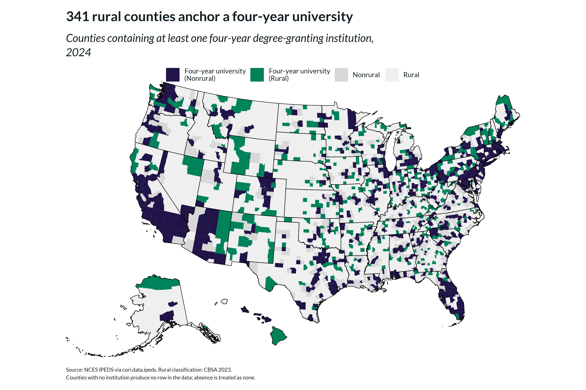
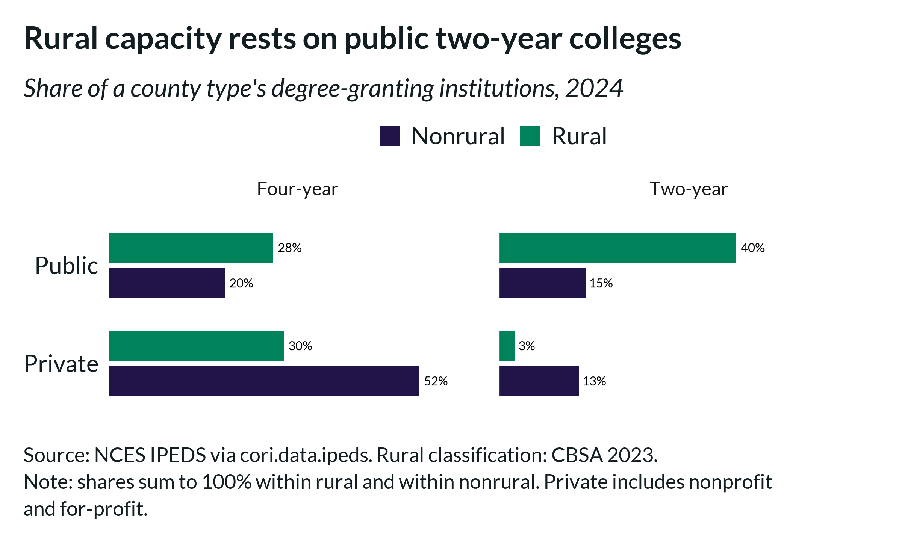
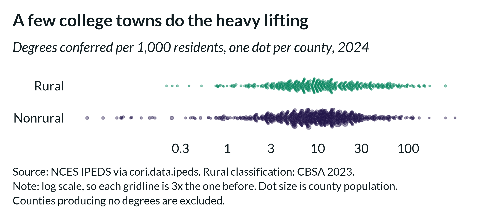
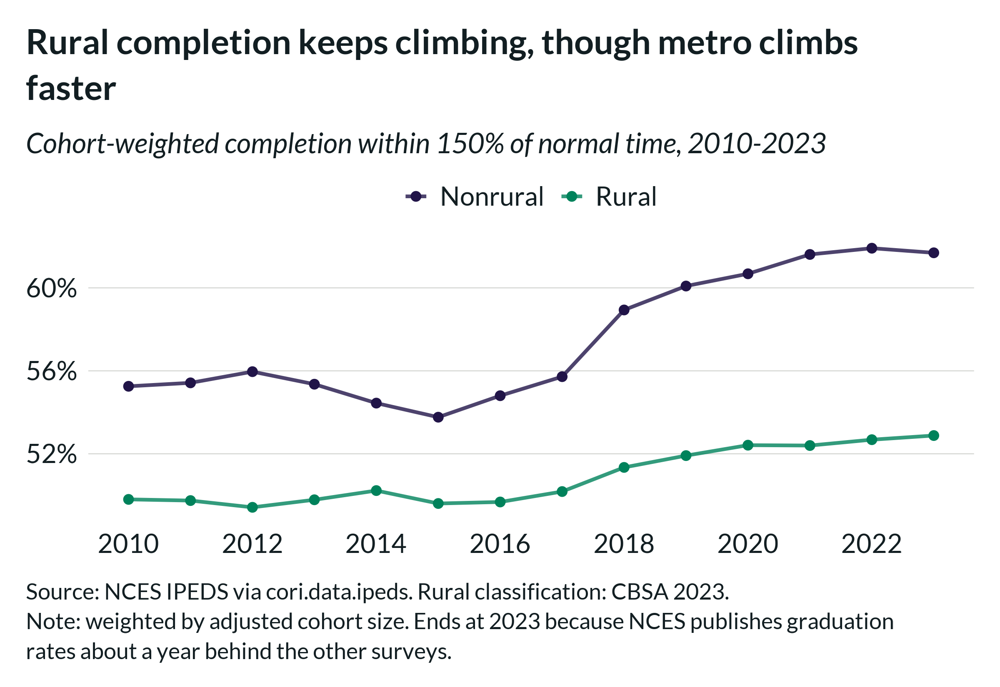
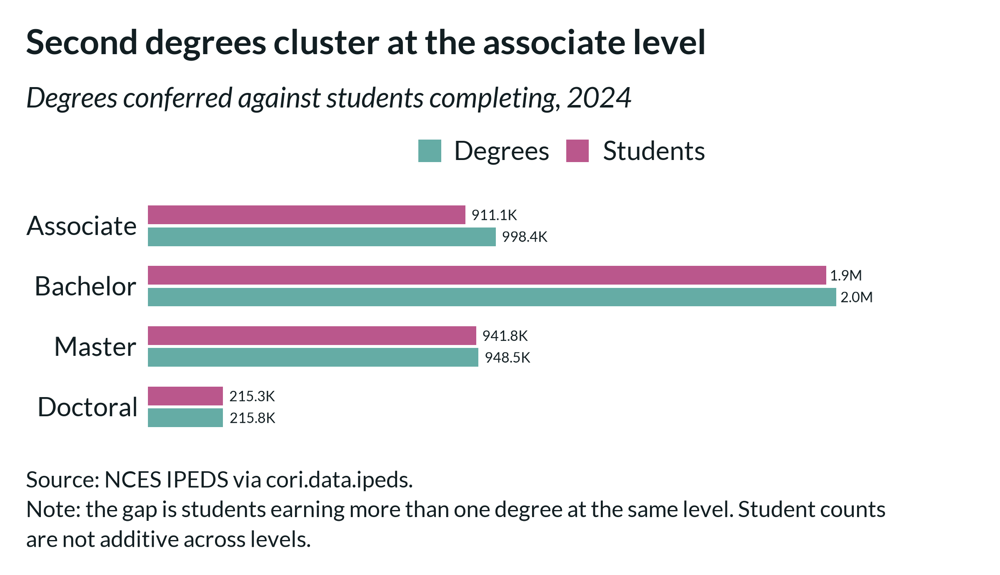
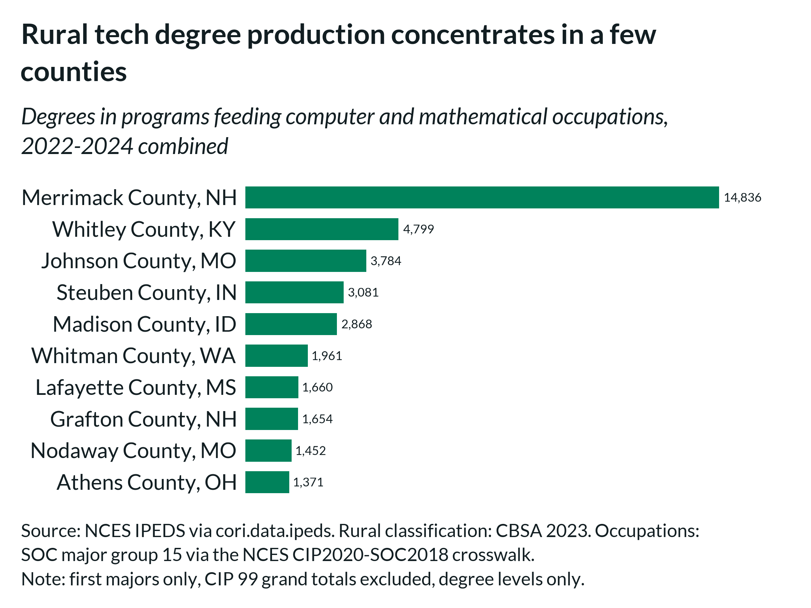

Rural Higher Education: Capacity, Production, and Outcomes
rural-higher-education.RmdFour IPEDS surveys each capture a distinct dimension of rural higher education: where institutions are, what kind they are, how many degrees they confer, and whether their students finish. This vignette compares rural and nonrural counties on each, then links degrees to the occupations they prepare students for.
For an overview of the package (the surveys it covers, its county and
institution levels, and its counting conventions), see
vignette("introduction", package = "cori.data.ipeds").
library(cori.data.ipeds)
library(cori.data.pep)
library(ruraldefinitions)
library(cori.charts)
library(dplyr)
library(tidyr)
library(ggplot2)
library(scales)
library(stringr)
load_fonts()
YR <- 2024
degrees <- get_degrees(years = YR)
completers <- get_completers(years = YR)
grad_rates <- get_graduation_rates(years = 2010:2023)
rural <- cbsa_2023 |>
select(geoid, is_rural)Where the four-year institutions are
Identifying counties with a four-year institution requires institution-level data, because the county-level variables count institutions without distinguishing which ones offer bachelor’s degrees.
has_university <- get_institutions(geography = "institution", years = YR) |>
filter(is_degree_granting == 1, is_4yr == 1, !is.na(geoid)) |>
distinct(geoid) |>
mutate(has_university = TRUE)
access <- rural |>
left_join(has_university, by = "geoid") |>
mutate(has_university = coalesce(has_university, FALSE))
access |>
group_by(is_rural) |>
summarize(
counties = n(),
with_uni = sum(has_university),
without = sum(!has_university),
pct_without = 100 * mean(!has_university),
.groups = "drop"
)
#> is_rural counties with_uni without pct_without
#> Nonrural 1252 632 620 49.5
#> Rural 1983 341 1642 82.8Of the 973 counties nationally with a four-year institution, 341 (35%) are rural. Another 227 rural counties have a degree-granting institution that offers no bachelor’s degree, bringing the number of rural counties with some postsecondary capacity to 568.

What kind of institutions
The institution directory includes the flags used to build the county counts, so level and control can be cross-tabulated.
ic <- get_institutions(geography = "institution", years = YR) |>
inner_join(rural, by = "geoid") |>
# the level filter matters: without it, the 71 degree-granting
# less-than-two-year institutions fall into the "Two-year" bucket
filter(is_degree_granting == 1, is_4yr == 1 | is_2yr == 1) |>
mutate(
level = if_else(is_4yr == 1, "Four-year", "Two-year"),
control = if_else(is_public == 1, "Public", "Private")
)
ic |>
count(is_rural, level, control) |>
group_by(is_rural) |>
mutate(share = 100 * n / sum(n)) |>
ungroup()
#> is_rural level control n share
#> Nonrural Four-year Private 1731 52.5
#> Nonrural Four-year Public 647 19.6
#> Nonrural Two-year Private 442 13.4
#> Nonrural Two-year Public 480 14.5
#> Rural Four-year Private 212 29.6
#> Rural Four-year Public 199 27.8
#> Rural Two-year Private 19 2.7
#> Rural Two-year Public 286 39.9The largest single category of nonrural institution is the private four-year college, at 52.5%; the largest rural category is the public two-year college, at 39.9%. Rural institutions are 67.7% public, compared with 34.2% of nonrural institutions.

Degrees conferred, per resident
Because count_degrees_total is a raw count, comparing
counties requires a denominator. Population comes from
cori.data.pep, joined on geoid.
pop <- get_population(geography = "county", years = YR) |>
filter(variable == "population") |>
select(geoid, population = value)
per_capita <- rural |>
inner_join(pop, by = "geoid") |>
left_join(
degrees |> filter(variable == "count_degrees_total") |>
select(geoid, degrees = value),
by = "geoid"
) |>
mutate(degrees = coalesce(degrees, 0))
per_capita |>
group_by(is_rural) |>
summarize(per_1k = 1000 * sum(degrees) / sum(population), .groups = "drop")
#> is_rural per_1k
#> Nonrural 12.5
#> Rural 9.4The aggregate rate hides wide variation. Plotted one dot per county, rates span more than two orders of magnitude, with a long rural right tail: Merrimack County, NH, confers 255 degrees per 1,000 residents; Whitley County, KY, 171; and Whitman County, WA, 151.

This variable measures production, not attainment: degrees are credited to the county where the institution is located, not where the student lives. Some outliers reflect large online programs; Merrimack County’s total, for example, is driven largely by Southern New Hampshire University.
How many students finish
grad_rate_150pct covers the full-time, first-time
bachelor’s cohort at four-year institutions, and is already
cohort-weighted within each county, so aggregating across counties
requires weighting by agg_var.
trend <- grad_rates |>
filter(variable == "grad_rate_150pct") |>
inner_join(rural, by = "geoid") |>
group_by(year, is_rural) |>
summarize(rate = sum(value * agg_var) / sum(agg_var), .groups = "drop")
# The same data, weighted and not, for 2023:
# is_rural weighted unweighted
# Nonrural 61.7 54.5
# Rural 52.9 47.3Between 2010 and 2023, the weighted rate rose from 49.8% to 52.9% in rural counties and from 55.3% to 61.7% in nonrural counties, so the gap widened from 5.5 to 8.8 points. The series ends in 2023 because of NCES’s publication lag.

Awards versus students
The Completions survey includes two files: C_A counts
awards and C_C counts
students. A student who earns two degrees at the same
level counts as one completer but two awards.
completers |>
group_by(variable) |>
summarize(students = sum(value), .groups = "drop")
#> variable students
#> count_students_assoc 911084
#> count_students_bach 1946263
#> count_students_doctoral 215318
#> count_students_masters 941849Of the 4,137,499 degrees conferred, most of the gap between degrees and students falls at the associate level, where degrees exceed students by roughly 10%. At every other level the difference is under 2%.

From degrees to occupations
Institution-level data retain NCES’s detailed CIP program codes,
which get_cip_soc_crosswalk() maps to SOC occupation codes.
Match the crosswalk vintage to the completions year: "2010"
for 2010–2019 and "2020" for 2020 onward.
xw <- get_cip_soc_crosswalk("2020") # CIP 2020 to SOC 2018
# SOC major group 15 is "Computer and Mathematical Occupations" -- 21 detailed
# occupations, from software developers to data scientists and statisticians.
#
# Collapse to a distinct CIP set FIRST. The crosswalk is many-to-many, so
# joining it to completions multiplies rows and inflates any sum afterwards.
cips <- xw |>
filter(grepl("^15-", soc_code)) |>
distinct(cip_code) |>
pull(cip_code)
# Three years combined, to smooth year-to-year noise in small counties
tech <- get_degrees(geography = "institution", years = 2022:2024) |>
filter(
cipcode %in% cips,
major_num == 1L, # first majors only
cipcode != "99.0000", # drop NCES grand-total rows
ed_level %in% c(3L, 5L, 7L, 17L, 18L, 19L)
) |>
group_by(geoid) |>
summarize(tech_degrees = sum(count_total_students), .groups = "drop")
rural |>
left_join(tech, by = "geoid") |>
mutate(tech_degrees = coalesce(tech_degrees, 0)) |>
group_by(is_rural) |>
summarize(degrees = sum(tech_degrees), .groups = "drop")
#> is_rural degrees
#> Nonrural 1111620
#> Rural 89086Across 2022–2024 rural counties produced 7.4% of degrees in programs feeding computer and mathematical occupations. 494 rural counties produce any; the top ten account for much (42%) of the volume, with Merrimack County NH at 14,836.

Replicating this for your state
A county’s geoid begins with its two-digit state FIPS
code, which gives the county set for a state; every getter then takes
those geoids.
MY_STATE_FIPS <- "30" # Montana
state_counties <- rural |>
filter(substr(geoid, 1, 2) == MY_STATE_FIPS) |>
pull(geoid)
get_degrees(geoids = state_counties, years = YR)
get_graduation_rates(geoids = state_counties, years = 2010:2023)Data sources
The Center on Rural Innovation’s curation of U.S. Department of Education, National Center for Education Statistics, Integrated Postsecondary Education Data System (IPEDS). https://nces.ed.gov/ipeds/
The Center on Rural Innovation’s curation of U.S. Census Bureau, Population Estimates Program. https://www.census.gov/programs-surveys/popest.html
The Center on Rural Innovation’s curation of U.S. Census Bureau, Metropolitan and Micropolitan Statistical Areas (OMB delineations). https://www.census.gov/programs-surveys/metro-micro.html
CIP-to-SOC crosswalk: NCES, Classification of Instructional Programs. https://nces.ed.gov/ipeds/cipcode/resources.aspx